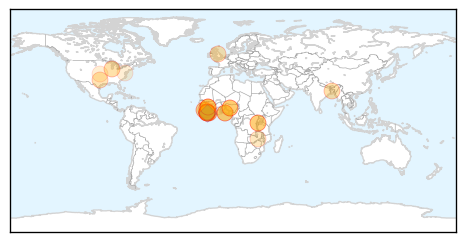
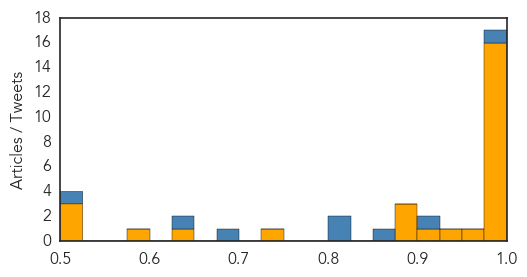
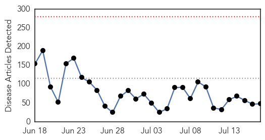
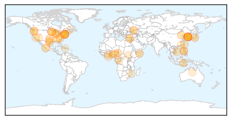
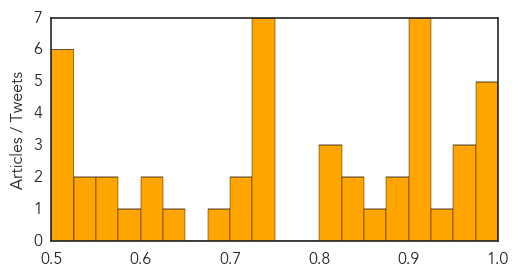

Ebola
30-Day Web Trend
1 alerts, 0 warnings

30-Day Twitter Trend
2 alerts, 0 warnings

Article Locations
Article Confidences
Top Articles:
- 1.000
- Ebola in West Africa: “We must finish the job”
- 1.000
- Ebola: “We must finish the job”
- 1.000
- Ebola Makes a Comeback in Liberia; Authorities Confirm Two More Cases
- 1.000
- Chicago Response to Ebola Epidemic Provides Roadmap for Response to Public Health Emergencies
- 1.000
- Liberia's last Ebola patient leaves treatment center
- 0.997
- One year after: Nigeria not ready for another Ebola attack
- 0.996
- Radio Motherboard: What Have We Learned from the Ebola Outbreak?
- 0.995
- Liberia says 4 remaining Ebola patients have recovered - MyNorthwest
- 0.993
- Ebola casts a shadow over maternal health in Sierra Leone
- 0.991
- Buhari to Join African Leaders at AU Confab on Ebola
- 0.991
- Buhari to join African Leaders at AU Confab on Ebola
- 0.983
- Ebola Study Gains Momentum, Say Investigators
- 0.981
- Averting EVD recurrence in Nigeria
- 0.980
- Ex-Ventura doc remains vigilant as Ebola scars Liberia again
- 0.976
- Ebola burial teams seek bribes in Sierra Leone
- 0.976
- Yankton Press & Dakotan: River City
- 0.973
- East African news, Headlines, Business, Tourism, Sports, Health, Entertainment, Education
- 0.947
- Ebola's Unpaid Heroes
- 0.911
- LIBERIA: Boy, 14, Confirmed As Gbarpolu 1st Ebola Case
- 0.893
- ‘Called for Life’: Ebola survivor shares ordeal — his, Africa’s — in memoir
- 0.884
- KIA acquires hi-tech machine to detect Ebola - The New Times
- 0.877
- Ebola Report Misses Mark on International Health Regulations
- 0.744
- Chinese doctors in Africa
- 0.640
- India assures all assistance to Ebola-hit Sierra Leone
- 0.599
- India assures all assistance to Ebola-hit Sierra Leone
- 0.513
- Ebola survivor, wife release book, to speak at church
- 0.513
- Ebola survivor, wife release book, to speak at church
- 0.507
- We need to strengthen biodefense now
Top Tweets:
- 0.980
- Ebola virus disease: Ebola Vaccine for inhalation effective in monkeys study says - ChristianToday http://t.co/ORRxwSoB9O ebola EVD
- 0.921
- The results are in: Inhalable Ebola vaccine spread of Lyme disease - CNN http://t.co/pWXnh7glkl ebola EVD
- 0.864
- Ebola casts a shadow over maternal health in Sierra Leone | Misha Hussein ... - The Guardian http://t.co/BQxyRvqror ebola EVD
- 0.822
- Results are in: Ebola vaccine Lyme disease - KCCI Des Moines http://t.co/alrYpZ3PeF ebola EVD
- 0.807
- Ebola vaccine trials enter Phase II | euronews world news - euronews http://t.co/U3J60OwwCM ebola EVD
- 0.688
- George HW Bush takes a tumble and Ebola in Liberia - WGN Radio http://t.co/qBLMH9Uc6m ebola EVD
- 0.632
- George HW Bush takes a tumble and Ebola in Liberia | WGN Radio - 720 AM - WGN Radio http://t.co/sXZVLxN6ML ebola EVD
- 0.519
- “With such high death from Ebola we'll fight hard using all preventive measures to keep SierraLeone safe” heardonthestreet
Unknown
30-Day Web Trend
0 alerts, 0 warnings

30-Day Twitter Trend
Article Locations

Article Confidences
Top Articles:
- 0.997
- S. Korea Hospital in Center of MERS Outbreak to Resume Services
- 0.997
- Hospital That Served As The Center Of The South Korean MERS Outbreak To Reopen Soon
- 0.995
- S.Korea hospital at centre of MERS outbreak to resume normal operation
- 0.988
- Samsung hospital resumes operations Monday
- 0.983
- Tick-borne illness spreads to TJ
- 0.975
- Japanese encephalitis toll 37 in Assam
- 0.973
- Drastic measures urged to curb diphtheria outbreak
- 0.961
- Lyme disease cases in Michigan increasing
- 0.937
- Symptoms in Humans, Treatment & Rash Pictures : Latinos Health News : Latinos Health
- 0.917
- Chicago Tribune
- 0.917
- Chicago Tribune
- 0.917
- Chicago Tribune
- 0.917
- Chicago Tribune
- 0.917
- Chicago Tribune
- 0.907
- The Areas Where Lyme Disease Lurks Are Growing
- 0.901
- Traces of Legionella bacteria found in Bonham water samples
- 0.895
- DOH-Mimaropa urges public to help gov't keep Phl MERSCoV-free
- 0.883
- Source of Buckhead Parasite Outbreak Still Unclear
- 0.862
- Lyme Disease Is Growing, Spreading To New Areas
- 0.843
- Lyme disease risk in the US is expanding in all directions
- 0.828
- Officials urge hospitals, labs to report vibrio cases
- 0.820
- Lyme Disease Is Growing, Spreading To New Areas
- 0.807
- Don't Eat Salmonella Sushi
- 0.806
- Lyme Disease Is Growing, Spreading To New Areas
- 0.748
- Quang Nam works to handle diphtheria outbreak — Talk Vietnam
- 0.743
- Gaviscon Boosts Support to Heartburn Patients , Articles
- 0.739
- Climbing Up The Income Ladder Can Seriously Damage Your Health!
- 0.739
- Hospitals combat superbugs
- 0.731
- Article: Cyprus Health - Cyprus Health Systems
- 0.727
- Salmonella Outbreak Linked to Raw Frozen Tuna Grows Again
- 0.726
- Health officials warn of salmonella outbreak
- 0.709
- In eastern Ukraine, water shortage puts babies and mothers at risk - Ukraine
- 0.705
- Green Island norovirus outbreak linked to oysters
- 0.684
- Salmonella Typhimurium Sickens At Least 50 Oregon Conference Attendees
- 0.649
- Hipaa’s Use as Code of Silence Often Misinterprets the Law
- 0.601
- Nasty bite marred visit to Mozambique
- 0.601
- Bird Flu: Ministry's request for 12 cars is strange
- 0.596
- Drs. David Trylovich and Ryan S. Gifford Welcome New Patients for a Less Invasive Technique for Treating Gum Disease
- 0.572
- Govt Asked to Resume Indoor Residual Spray to Contain Malaria
- 0.559
- Warning of extremely high fire risk as heat wave arrives
- 0.545
- Only 60 Percent Of Ukraine Pre-conflict Water Supply Capacities Still Functioning
- 0.536
- Queensland melon growers disappointed in state budget biosecurity funding for Cucumber Green Mottle Mosaic Virus
- 0.519
- The Resident Doctors’ Strike
- 0.519
- MPs Fight Over 20 Bird Flu Cars – Daily Guide Ghana
- 0.517
- Elections in Haiti "major moment" for country
- 0.511
- Heat warning issued for this weekend
- 0.511
- 32 people hospitalized for suspected food poisoning in south China
- 0.507
- Sweets & Candies Poison 2,000 Students in the Philippines Due to Staphylococcus Contamination
Top Tweets:
-
No tweets found for Jul 17, 2015